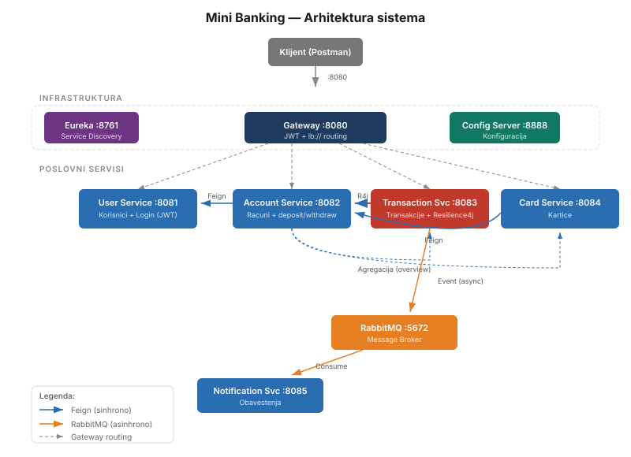

Projekat implementira mikroservisnu aplikaciju na temu Mini Banking. Sistem simulira osnovne funkcionalnosti bankarskog sistema: registracija korisnika, upravljanje računima, uplata i isplata, platne kartice i obaveštenja o izvršenim transakcijama.
Cilj je bio demonstrirati principe modernog distribuiranog sistema — kako se servisi registruju i pronalaze jedan drugog, kako komuniciraju sinhroно i asinhroно, šta se dešava kad jedan servis prestane da radi i kako se ceo sistem može pokrenuti jednom komandom.
Implementirane su sve obavezne tehnologije i sve četiri opcione:

Sav saobraćaj prolazi kroz API Gateway (port 8080). Gateway proverava JWT token i rutira zahteve
ka odgovarajućim servisima koristeći lb:// prefiks koji automatski balansira
opterećenje kroz Eureku.
Centralni registar servisa. Svaki servis koji startuje registruje se na Eureku sa svojim imenom. Gateway i Feign klijenti koriste to ime da pronađu adresu servisa — bez hardkodovanih URL-ova. Eureka prati dostupnost servisa kroz heartbeat mehanizam.
Centralizovana konfiguracija sa lokalnim fajl sistemom (native profil). Vrednosti iz
config-repo/ foldera dostupne su svim servisima pri startu. Na primer,
transaction.max-iznos=100000 čita se iz Config Servera umesto iz lokalnog
application.properties. Promena vrednosti ne zahteva rebuild servisa.
Jedina ulazna tačka u sistem. Korišćena je MVC varijanta Spring Cloud Gateway-a sa rutama
u YAML konfiguraciji. Sadrži JWT filter koji proverava svaki zahtev osim javnih ruta
(POST /api/users i POST /api/users/login).
Upravljanje korisnicima i autentifikacija. Login endpoint verifikuje kredencijale i generiše JWT token potpisan HMAC-SHA256 algoritmom. Lozinke se čuvaju kao BCrypt hash — nikad u čistom tekstu. Ostali servisi pozivaju ovaj servis kroz Feign klijent da provere da li korisnik postoji.
Upravljanje bankovnim računima. Svaki račun dobija automatski generisan broj u formatu
265-XXXXXXXXXX i počinje sa stanjem nula. Podržane operacije su uplata i isplata,
sa proverom pokrića kod isplate. Sadrži agregacioni endpoint koji kroz tri Feign poziva vraća
kompletan pregled računa sa vlasnikom, karticama i transakcijama.
Upravljanje transakcijama i najkompleksniji servis u sistemu. Svaka transakcija menja stanje računa kroz Feign poziv ka account-service, zaštićen Resilience4j Circuit Breaker i Retry mehanizmom. Nakon uspešne transakcije šalje asinhroni događaj na RabbitMQ. U Docker okruženju pokreće se na portovima 8091 i 8092 radi demonstracije load balancinga.
Upravljanje platnim karticama. Pri izdavanju kartice proverava da li navedeni račun postoji kroz Feign poziv ka account-service. Podržane su debitne i kreditne kartice sa statusima AKTIVNA i BLOKIRANA, uz mogućnost blokiranja i odblokiranja.
Konzumira poruke sa RabbitMQ queue-a i kreira obaveštenja u sopstvenoj bazi. Implementirana je
idempotentnost — pre svakog upisa proverava se eventId poruke, i ako zapis već
postoji, poruka se ignoriše. Ovo sprečava duplikate u slučaju višestruke isporuke.
Feign klijent omogućava pozivanje REST endpointa drugog servisa kao da se radi o lokalnom pozivu.
U @FeignClient(name="...") navodi se ime servisa onako kako je registrovano na Eureci,
a Feign automatski pronalazi adresu bez hardkodovanih URL-ova.
GET /api/accounts/{id}/overview
GET /api/transactions/{id}/details
Nakon uspešne transakcije, transaction-service šalje poruku tipa TransactionEventDto
na transaction.exchange. Notification-service definiše queue, exchange i binding pri
startu i sluša poruke kroz @RabbitListener. Transaction-service ne mora da zna da
notification-service postoji — ako servis nije dostupan, poruka čeka u queue-u.
TransactionEventDto nakon uspešne transakcije
Komunikacija između transaction-service i account-service zaštićena je kombinacijom Circuit Breaker i Retry mehanizma. Retry pokušava poziv maksimalno 3 puta sa pauzom od 2 sekunde. Circuit Breaker prati poslednjih 5 poziva i ako više od 50% završi greškom, otvara se i narednih 10 sekundi odmah odbija pozive bez prosleđivanja.
Redosled aspekata je bitan: Circuit Breaker je spoljašnji (order=1), Retry unutrašnji (order=2). Kada se Circuit Breaker otvori, Retry više ne pokušava ponovo — odmah se poziva fallback koji vraća grešku klijentu.
@CircuitBreaker i @Retry nalaze se na posebnom Spring bean-u
(AccountClientService), a ne u TransactionService. Razlog je Spring AOP
ograničenje — poziv anotiranog metoda iz iste klase zaobilazi proxy i anotacije ne bi imale efekta.
Klijent šalje korisničko ime i lozinku na POST /api/users/login. User-service
verifikuje kredencijale poređenjem BCrypt hash-a i generiše JWT token potpisan HMAC-SHA256 algoritmom
sa tajnim ključem. Token sadrži korisničko ime i vreme isteka.
Gateway filtrira svaki zahtev kroz JwtAuthFilter. Filter čita
Authorization: Bearer <token> header i verifikuje potpis istim tajnim ključem.
Javne rute (POST /api/users i POST /api/users/login) se propuštaju bez provere.
Ceo sistem se podiže komandom docker-compose up --build. Svaki servis ima Dockerfile
koji kopira JAR fajl i pokreće ga. RabbitMQ se pokreće iz zvaničnog Docker image-a.
Unutar Docker mreže servisi komuniciraju po imenima kontejnera, ne po localhost.
Zato se u environment varijablama override-uju adrese:
EUREKA_CLIENT_SERVICEURL_DEFAULTZONE=http://eureka-server:8761/eureka/
SPRING_RABBITMQ_HOST=rabbitmq
SPRING_CONFIG_IMPORT=optional:configserver:http://config-server:8888
Transaction-service je konfigurisan na opsegu portova 8091-8092:8083 što
omogućava pokretanje dve instance komandom --scale transaction-service=2.
Gateway automatski balansira zahteve između obe instance kroz Eureku.
Projekat implementira sve obavezne tehnologije i sve četiri opcione (Config Server, RabbitMQ, Docker Compose, JWT). Kroz razvoj je rešeno nekoliko konkretnih problema tipičnih za mikroservisne sisteme: Resilience4j self-invocation problem, deserijalizacija RabbitMQ poruka između servisa sa različitim paketima, idempotentnost consumer-a i konfiguracija hostname-ova u Docker mreži.
Sistem je testiran kroz Swagger UI na svakom servisu, Postman kolekciju i direktnu interakciju sa Eureka dashboard-om i RabbitMQ Management UI-jem.